Colosseum · comparison pass 5
Left: the reference photo. Right: the model from the same viewpoint. Write what differs in evidence.comparisons.
ref 0 · north · 359.1°, 0°

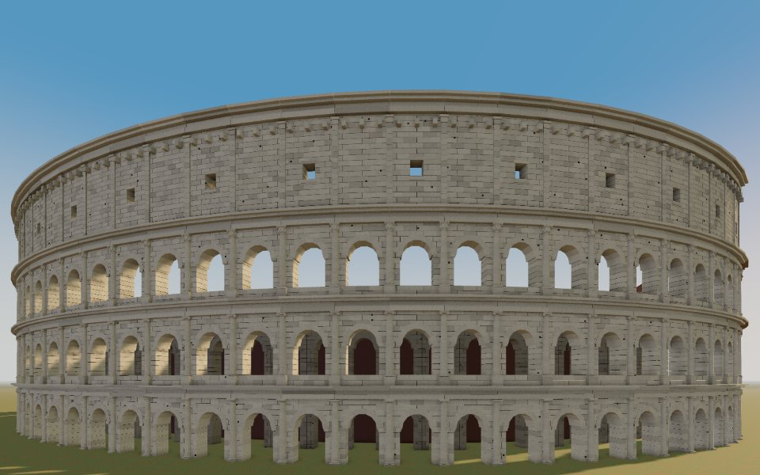
ref 1 · east · 86.5°, -9.5°

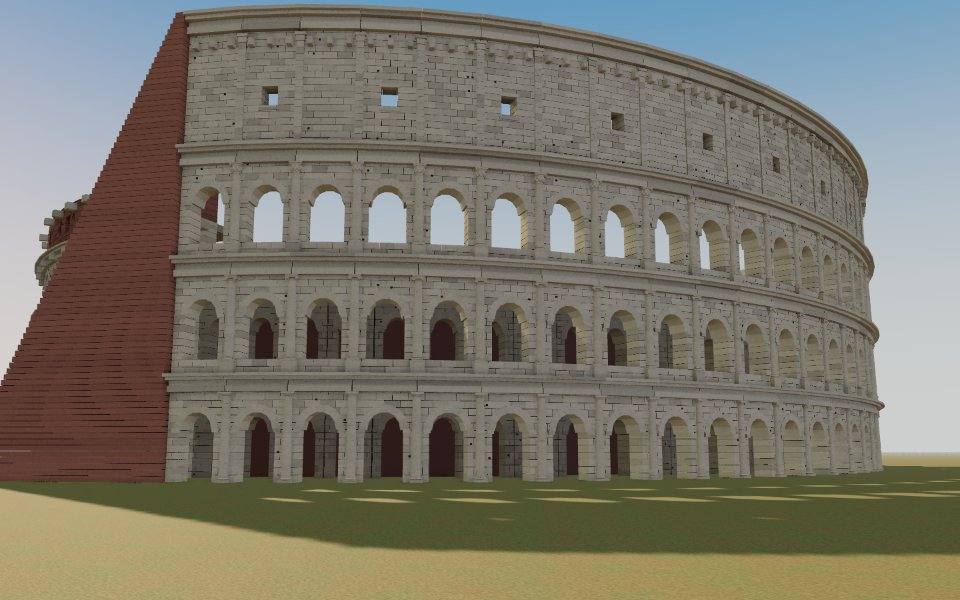
ref 2 · south · 186.3°, -16.1°

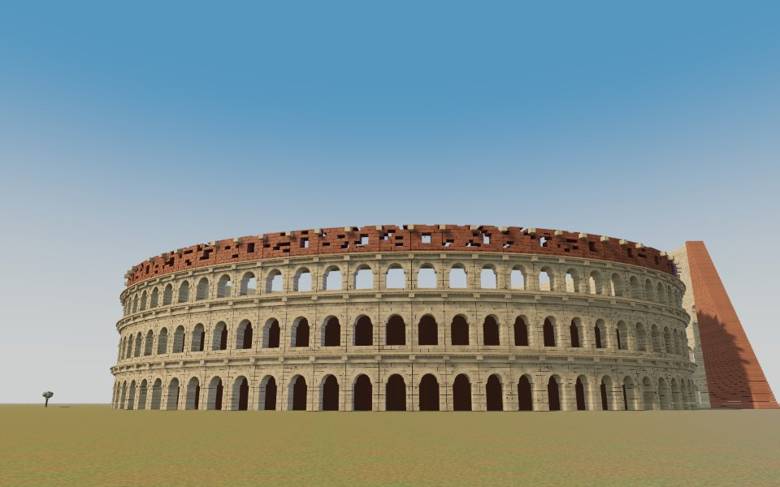
ref 3 · west · 251°, -10.6°
_-_Rome,_Italy_2024-03-03_(16).jpg?width=900)
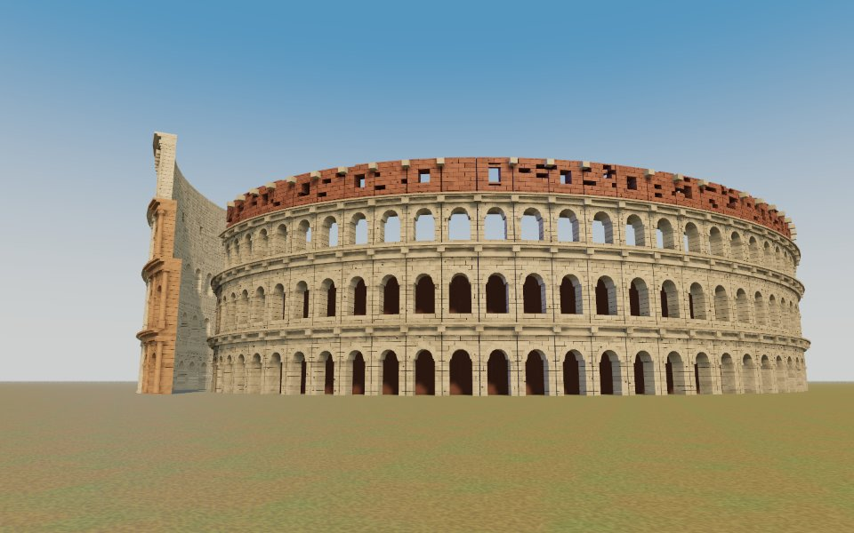
The end of every phase
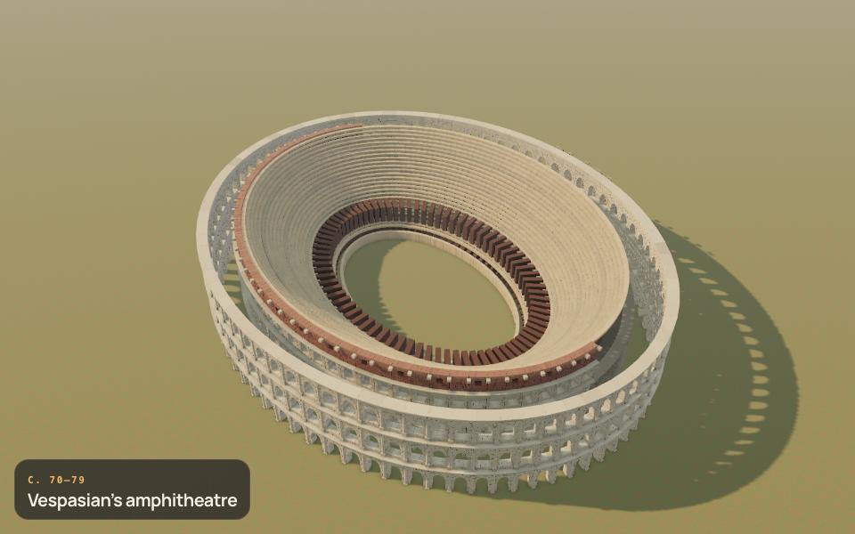
c. 70–79 · Vespasian’s amphitheatre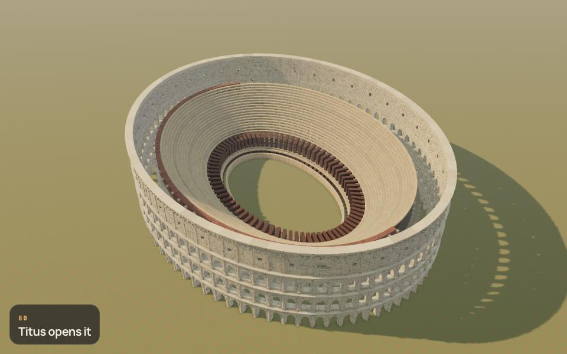
80 · Titus opens it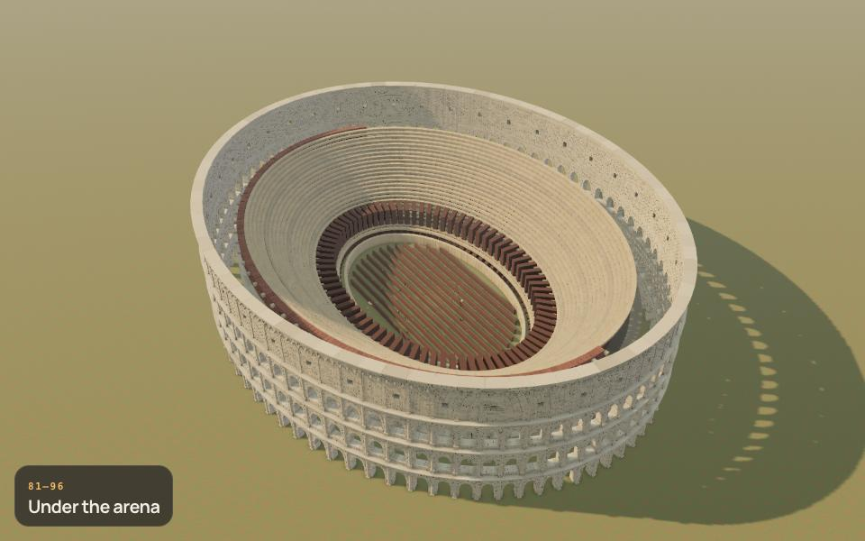
81–96 · Under the arena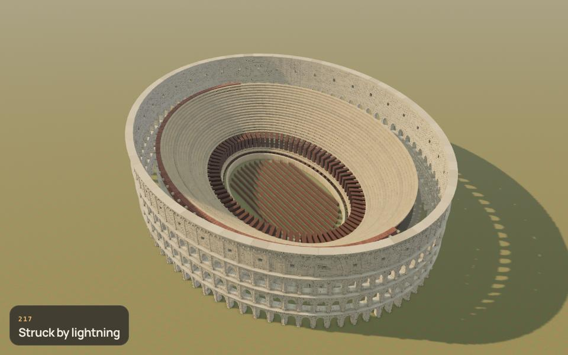
217 · Struck by lightning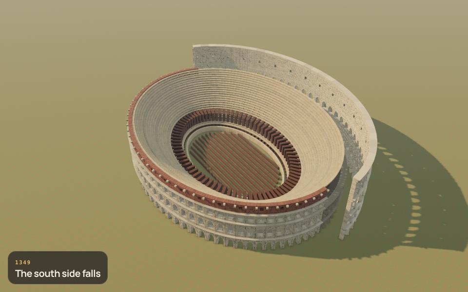
1349 · The south side falls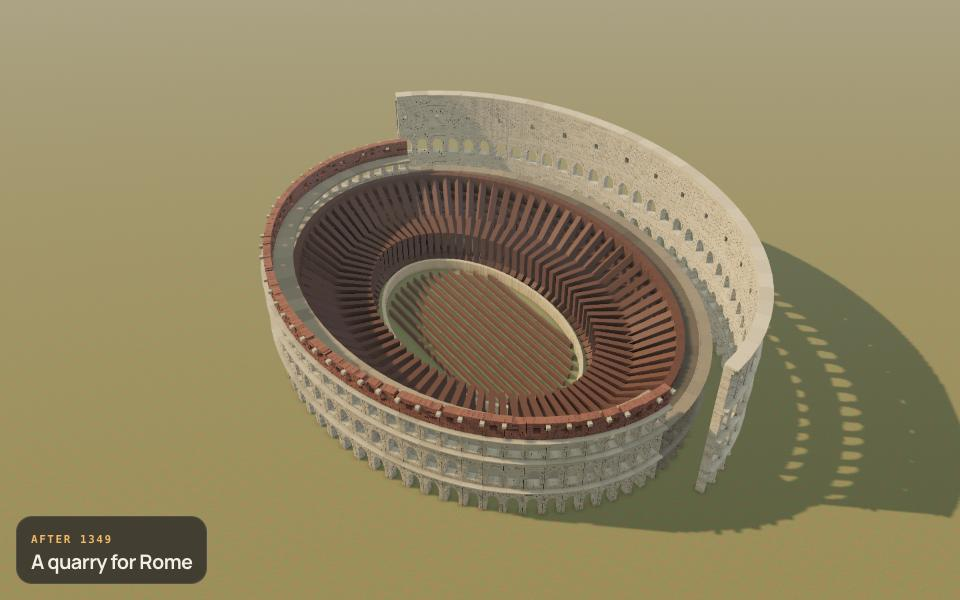
After 1349 · A quarry for Rome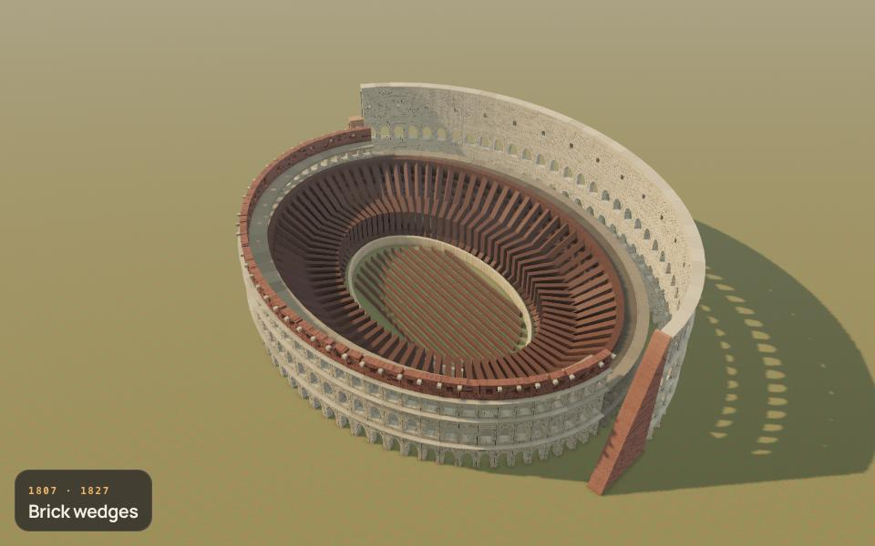
1807 · 1827 · Brick wedges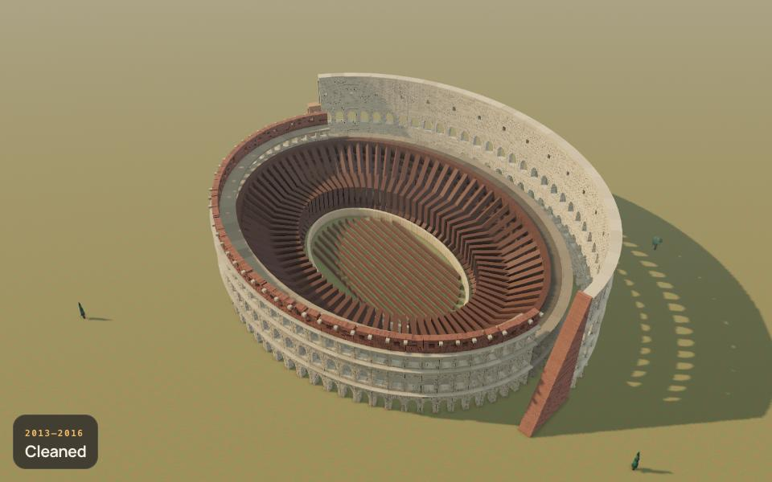
2013–2016 · Cleaned